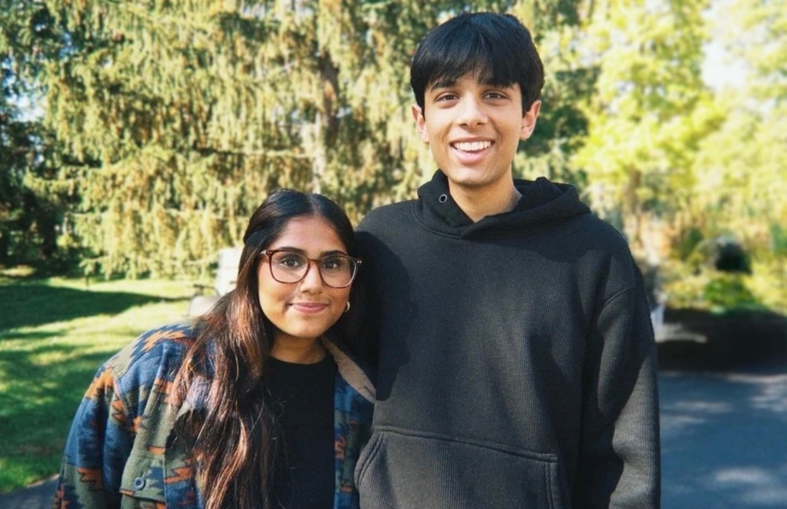

Aarya and Andrew are both juniors at Hopewell Valley Central High School. The idea for 30 Minutes NJ started close to home, right in their own lunch period. At their school, a block called Lab cuts lunch down from 40 minutes to just 15 on days when students have a science period before or after lunch. That leaves barely enough time to eat. They felt that squeeze themselves, and they knew classmates who dealt with the same thing, so they started looking into it more seriously.
What they found surprised them. This isn't just a Hopewell Valley problem. Short lunch periods are a widespread issue across New Jersey, and no law, state or federal, sets any minimum amount of time students must be given to eat. The research was just as striking. Study after study shows that lunch periods under 30 minutes are linked to worse nutrition, more food waste, and real effects on health and focus. Students can't perform at their best in the classroom if they aren't given enough time to eat beforehand.
That mix of a problem they lived firsthand, evidence it was bigger than their own school, and a total absence of legal protection is what pushed Aarya and Andrew to stop treating it as something to complain about and start treating it as something to fix.